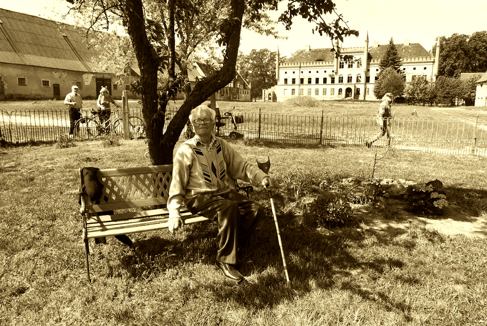

Heute

Das ehrenamtlich betriebene Spenden-“GartenCafé“ vor dem Baubüro der Schlossanlage hat sich inzwischen gut etabliert. Schon zur Eröffnung am 10. Mai war es ein gut besuchter Ort der Begegnung für eine Vielfalt von Gästen. Die Entwicklung der Schlossanlage wird gern auch aus der Nähe verfolgt. Herr Jetz aus Buchholz, der unsere Begleitung der Schlossanlage über die Jahre in der TOLLENSETALER STIMME verfolgt hat, kam mit seinem kleinen Elektrofahrzeug den Berg herabgefahren. Ihn werden die neuesten Nachrichten aus Broock besonders erfreuen. Die Baugenehmigung für die Notsicherung ist da. Das Projektteam rechnet mit der Genehmigung des „förderunschädlichen vorzeitigem Maßnahmebeginn“. Nur noch ein paar Tage in den Startlöchern, dann können sie in kürzester Zeit loslegen. Ende August, Anfang September geht es vorwärts. Baustart zum Tag des offenen Denkmals. Jetzt gibt es kein zurück mehr! Wir freuen uns. Das nachhaltige Veranstaltungsgelände rückt näher. Aber „Vorpommerns Schlossbesitzer fürchten die neuen Windmühlen“ stand letztens im Nordkurier. Gegen Furcht sollte man was tun.